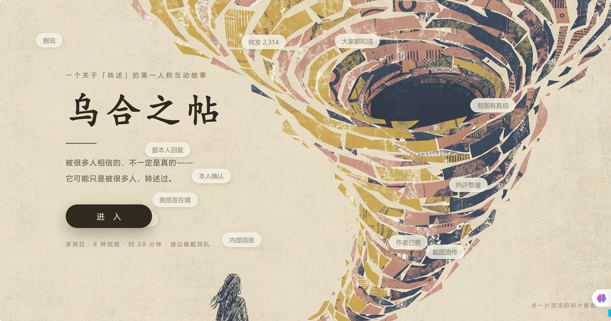
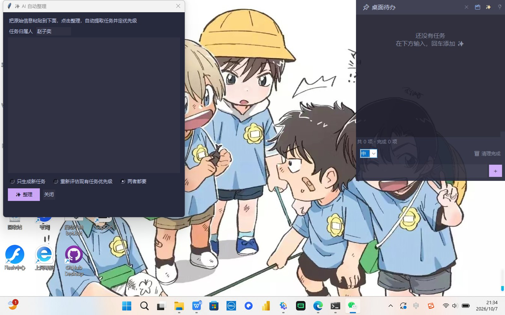
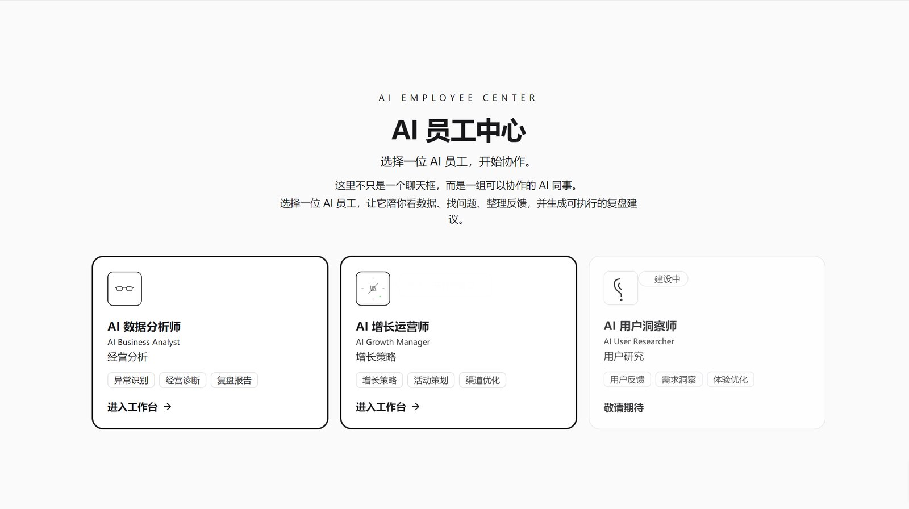
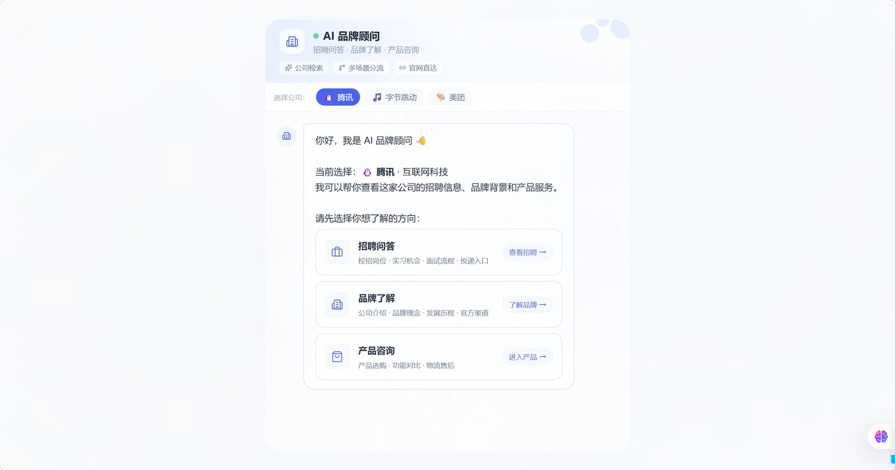

01乌合之帖 · Citogenesis
知乎黑客松 48h 互动叙事游戏

产品流程设计 ｜ AI 产品实践
知乎黑客松 48h 互动叙事游戏

Python 桌面浮窗效率工具

边界决策不做常规窗口 —— 痛点不是「功能全」，是「看得见又不打扰」
1,007 行 Python + tkinter 浮窗待办，置顶 / 半透明 / 无边框。集成 DeepSeek「AI 自动整理」；没配 API Key 时自动降级为本地规则整理，双击装上就能用。
真实用户验证：发布到 AI 社交平台，获得 11 人关注；1 位用户明确确认实际使用并给出正向反馈，据此完成一轮界面迭代 —— 走通「发布 → 反馈 → 迭代」闭环。
Python + tkinter · 单文件分发 · 无需安装
企业级 AI 员工平台

长期在跑的 AI 应用

边界决策给它明确的「生活节奏」，而不是随叫随到的工具
微信机器人「小鱼」 —— wxauto + DeepSeek，SQLite 长期对话记忆，含表情包系统、系统托盘、Web 仪表盘。